электронный ресурс по учебной дисциплине 1-58 01 01 - "Инженерно-психологическое обеспечение информационных технологий"
|
||
| Оглавление | Программа | Теория | Практика | Контроль знаний | Об авторах | ||
| Практика
ЛАБОРАТОРНАЯ РАБОТА № 1 Активные фильтры 1.1. Цель работы Изучить работу и методы проектирования активных фильтров I и II порядков. 1.2. Теоретические сведения В зависимости от передаточной функции типа и числа цепочек RC, фильтры классифицируются как фильтры I порядка, II порядка, III порядка, …, n-го порядка. На рис. 1.1 показан низкочастотный фильтр Баттерворта первого порядка, в котором используется только одна RC-цепь. Отметьте, что в данной схеме операционный усилитель (ОУ) используется в неинверсной конфигурации. Следовательно, это не перегружает RC-цепь. Резисторы R1 и RF определяют усиление фильтра. Согласно правилу делителя напряжения, напряжение на неинверсном входе ОУ (на конденсаторе C): , (1.1) где ;. Упрощая уравнение (1.1), получим 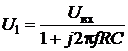. (1.2) Выходное напряжение: 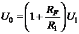. Таким образом, 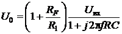 (1.3) или 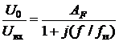, (1.4) где – усиление фильтра как функция частоты; – коэффициент усиления в полосе пропускания фильтра; f – частота входного сигнала; 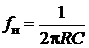– верхняя частота среза фильтра. 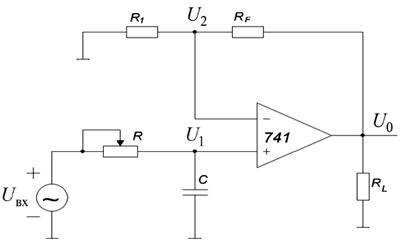 a 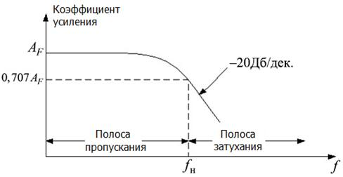 б Рис. 1.1. Фильтр нижних частот первого порядка: a – схема, б – частотная характеристика Коэффициент усиления и уравнения фазового угла фильтра нижних частот могут быть получены путём преобразования уравнения (1.4) в его эквивалентную полярную форму: 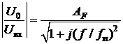, (1.5)
, (1.6) где φ – фазовый угол в градусах. Работа фильтра нижних частот может быть проанализирована с помощью уравнения (1.5): 1) На очень низкой частоте, при: . 2) При: . 3) При: .
Таким образом, фильтр нижних частот имеет постоянный коэффициент усиления AF в полосе частот от 0Гц до верхней частоты среза fн. На частоте fн усиление – 0,707 AF, и после fн коэффициент уменьшается с постоянной скоростью с увеличением частоты. Таким образом, когда частота увеличивается десятикратно (одна декада), коэффициент усиления делится на 10. Другими словами, коэффициент уменьшает усиление на 20 дБ (= 20log10) каждый раз, когда частота увеличивается в 10 раз. Следовательно, коэффициент усиления уменьшается после fн со скоростью 20dB/дек. или 6dB/октав, где октава выражает двукратное увеличение частоты. Частоту f = fн называют частотой среза, потому что усиление фильтра на этой частоте снижается на 3 дБ (20log0,707) по сравнению с усилением на частоте 0 Гц. 1.2.1. Проектирование фильтров нижних частот Фильтр нижних частот может быть спроектирован следующим образом: 1. Выбор значения верхней частоты среза, fн. 2. Выбор значения емкости конденсатора С меньшей или равной 1μF. 3. Определение значения сопротивления резистора R с помощью формулы: .
4. Наконец, выбор значения R1 и RF в зависимости от требуемого коэффициента усиления в полосе пропускания при помощи формулы .
1.2.2. Фильтры верхних частот I порядка Фильтры верхних частот – результат перемены местами резисторов и конденсаторов в фильтрах нижних частот. Таким образом, фильтр верхних частот I порядка, получим из фильтра I порядка нижних частот, меняя местами резистор R и конденсатор С. На рис. 1.2 показан фильтр верхних частот Баттерворта I порядка с частотой среза fн. Это – частота, на которой величина коэффициента усиления составляет 0,707 от значения коэффициента усиления в полосе пропускания. Очевидно, все частоты, выше чем fн – частоты полосы пропускания с самой высокой частотой, определяемой верхней частотой ОУ с обратной связью.
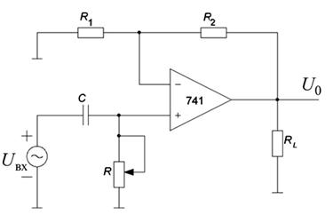 a 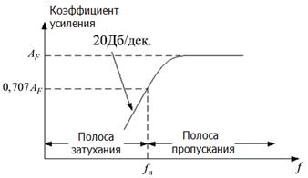 б Рис. 1.2 a – фильтр верхних частот I порядка, б – его частотная характеристика. Фильтр верхних частот (см. рис. 1.2) и фильтр нижних частот (см. рис.1.1) – одни и те же схемы, за исключением того, что определяющие частоту компоненты (R и C) меняются местами. Для фильтра верхних частот (см. рис. 1.2) выходное напряжение 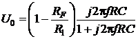
или 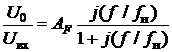, (1.7)
где – коэффициент усиления в полосе пропускания фильтра; – частота входного сигнала (Гц);
– нижняя частота среза (Гц).
Следовательно, величина коэффициента усиления по напряжению: 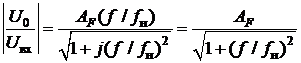. (1.8)
Так как фильтры верхних частот получаются из фильтров нижних частот, обменом местами R и С, то проектирование фильтров верхних частот происходит таким же образом, как и фильтров нижних частот. Скорость изменения коэффициента усиления фильтра в полосе затухания, равная 40 dB/дек. получается у фильтров II порядка. Фильтр нижних частот I порядка может быть преобразован в фильтр II порядка путём введения дополнительной RC-цепи, как показано на (рис.1.3). Фильтры II порядка очень важны, потому что фильтры высшего порядка могут быть разработаны, только с их помощью. Усиление в фильтрах II порядка устанавливается резисторами R1 и RF, в то время как частота среза fн и полоса пропускания фильтра определяется компонентами R2, C2, R3 и C3 следующим образом: 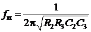. (1.9)
Кроме того, для фильтра II порядка коэффициент усиления по напряжению: 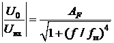, (1.10)
где – коэффициент усиление в полосе пропускания; – частота входного сигнала (Гц); – нижняя частота среза (Гц).
1.2.3. Проектирование фильтров II порядка
За исключением различия в скорости изменения коэффициента усиления в полосе затухания фильтры II порядка и фильтры I порядка идентичны. Поэтому проектирование фильтров II порядка идентично проектированию фильтров I порядка (см. рис. 1.3) 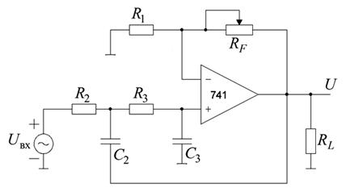 a 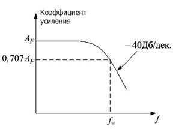 б Рис. 1.3 a – схема фильтра нижних частот II порядка, б – его частотная характеристика. Вторичный фильтр нижних частот идентичен тому же фильтру из высокоточного типа. Поэтому шаги по построению проекта вторичного фильтра идентичны таковым из высокоточного фильтра: 1. Выбор значения для частоты среза, fн. 2. Чтобы упростить расчёт, возьмём R2 = R3 = R и C2 = C3 = C. Затем выберем значение C ≤ 1μF. 3. Вычислим значение R, используя уравнение (1.9): .
4. Наконец, из-за равных значений резисторов (R2 = R3) и конденсаторов (C2 = C3) значения, коэффициент усиления AF в полосе пропускания фильтра нижних частот II порядка должен быть равным 1,586. Таким образом, RF = 0,586R1. Это усиление необходимо, чтобы гарантировать амплитудно-частотную характеристику, соответствующую фильтру Баттерворта. Следовательно, необходимо выбрать значение резистора R1 ≤ 100 кΩ и вычислить значение RF. 1.2.4. Фильтр верхних частот II порядка Как и в случае фильтров первого порядка, фильтр верхних частот второго порядка построим из фильтра нижних частот второго порядка просто, меняя местами резисторы и конденсаторами. На рис. 1.4 показана схема фильтра верхних частот второго порядка из которой следует: , (1.11)
где AF = 1,586 – коэффициент усиления в полосе пропускания для фильтра Баттерворта второго порядка; f – частота входного сигнала (Гц); fн – частота среза (Гц). Поскольку фильтры II порядка нижних и верхних частот отличаются только расположением конденсаторов и резисторов, то проектирование фильтров верхних частот второго порядка аналогично проектированию фильтров второго порядка нижних частот. 1.3. Требуемое оборудование Программа компьютерного моделирование электронных схем Multisim: 1.4. Порядок выполнения лабораторной работы 1.4.1. Фильтр нижних частот I порядка 1. Собрать фильтр нижних частот I порядка, показанный на рис. 1.1, используя R1 = 9,1 кОм, RF = 5,1 кОм, R = 30 кОм, C = 0,01 мкФ, и подать синусоидальный сигнал с выхода генератора сигналов на вход фильтра. 2. Установить размах входного синусоидального сигнала – 1 В. 3. Изменяя частоту входного сигнала от 10 Гц до 10 кГц шагами, показанными в таб. 1.1, измерить U0 и определите коэффициент усиления AF для каждой частоты. Таблица 1.1
4. Подключить измеритель АЧХ (Bode Plotter), представить амплитудно-частотную характеристику фильтра, используя полулогарифмическую шкалу, и определить экспериментальную частоту среза фильтра. 5. Сравнить экспериментальную и теоретическую fн. 6. После проведения эксперимента очень точно замерить значения каждого резистора и конденсатора, теоретически вычислить частоту среза и снова сравнить с результатом эксперимента. 7. Оценить качество своей экспериментальной работы. 8. Рассчитать фильтр нижних частот I порядка для частоты среза fн = 1500 Гц и собрать его. 9. Повторить эксперименты по п. 2 – 5 и проверить результаты расчета. 1.4.2. Фильтр верхних частот I порядка 1. Собрать фильтр верхних частот I порядка, показанный на рис. 1.2, используя R1=9,1 кОм, RF=5,1 кОм, R=30 кОм, C=0,01 мкФ и подать синусоидальный сигнал с выхода генератора сигналов на вход фильтра. 2. Установить размах входного синусоидального сигнала 1 В. 3. Изменяя частоту входного сигнала от 10 Гц до 10 кГц шагами, показанными в таб. 1.2, измерить U0 и определить коэффициент усиления AF для каждой частоты. Таблица 1.2
4. Подключить измеритель АЧХ (Bode Plotter), представить амплитудно-частотную характеристику фильтра, используя полулогарифмическую шкалу, и определить экспериментальную частоту среза фильтра. 5. Сравнить экспериментальную и теоретическую fн. 6. После проведения эксперимента очень точно замерить значения каждого резистора и конденсатора, теоретически вычислить частоту среза и снова сравнить с результатом эксперимента. 7. Оценить качество своей экспериментальной работы. 8. Рассчитать фильтр верхних частот I порядка для частоты среза fн = 200 Гц и собрать его. 9. Повторите эксперименты по п. 2 – 5 и проверить результаты расчёта. 1.4.2. Фильтр нижних частот II порядка 1. Собрать фильтр нижних частот II порядка, показанный на рис. 1.3, используя R1 = 9,1 кОм, RF = 5,1 кОм, R2 = R3 = 30 кОм, C2 = C3 = 0,01 мкФ и подать синусоидальный сигнал с выхода генератора сигналов на вход фильтра. 2. Установить размах входного синусоидального сигнала 1 В. 3. Изменяя частоту входного сигнала от 10 Гц до 10 кГц шагами, показанными в таб. 1.3, измерить U0 и определить коэффициент усиления AF для каждой частоты. Таблица 1.3
4. Подключить измеритель АЧХ (Bode Plotter), представить амплитудно-частотную характеристику фильтра, используя полулогарифмическую шкалу, и определить экспериментальную частоту среза фильтра. 5. Сравнить экспериментальную и теоретическую fн. 6. После проведения эксперимента, очень точно замерить значения каждого резистора и конденсатора, теоретически вычислить частоту среза и снова сравнить с результатом эксперимента. 7. Оценить качество своей экспериментальной работы. 8. Рассчитать фильтр нижних частот II порядка для частоты среза fн = 1500 Гц и собрать его. 9. Повторить эксперименты по п. 2 – 5 и проверить результаты расчёта. 1.4.3. Фильтр верхних частот II порядка 1. Собрать фильтр нижних частот II порядка, показанный на рис. 1.4, используя R1 = 9,1 кОм, RF = 5,1 кОм, R2 = R3 = 30 кОм, C2 = C3 = 0,01 мкФ и подать синусоидальный сигнал с выхода генератора сигналов на вход фильтра. 2. Установить размах входного синусоидального сигнала 1 В. 3. Изменяя частоту входного сигнала от 10 Гц до 10 кГц шагами, показанными в таб. 1.4, измерить U0 и определить коэффициент усиления, AF, для каждой частоты. 4. Подключить измеритель АЧХ (Bode Plotter), представить амплитудно-частотную характеристику фильтра, используя полулогарифмическую шкалу, и определить экспериментальную частоту среза фильтра. 5. Сравнить экспериментальную и теоретическую fн. 6. После проведения эксперимента, очень точно замерить значения каждого резистора и конденсатора, теоретически вычислить частоту среза и снова сравнить с результатом эксперимента. 7. Оценить качество своей экспериментальной работы. 8. Рассчитать фильтр нижних частот II порядка для частоты среза fн = 200 Гц и собрать его. 9. Повторить эксперименты по п. 2 – 5 и проверить результаты расчёта. Таблица 1.4
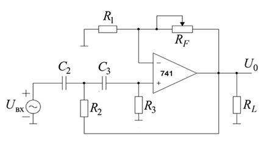 а Рис. 1.4, a – фильтр Баттерворта верхних частот II порядка 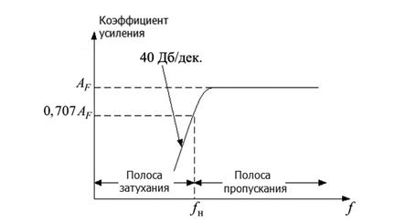 б Рис.1.4, б – частотная характеристика фильтра 1.5. Содержание отчёта 1. Цель эксперимента. 2. Схемы, которые были исследованы в лабораторной работе. 3. Результаты исследований. 4. Выводы. 1.6. Контрольные вопросы 1. Дать определение фильтров нижних и верхних частот I и II порядков. 2. Особенности проектирования фильтров нижних и верхних частот I и II порядков.
|
| (С) БГУИР |